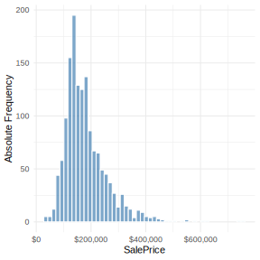
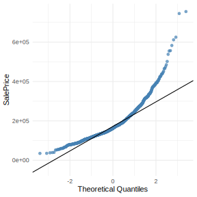
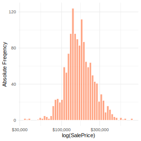
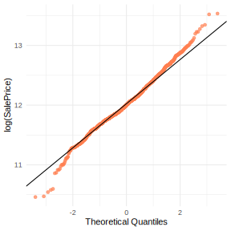

Regression Models Competition
1 Executive Summary
This report outlines the development of a predictive model for residential home prices in Ames, Iowa. The objective was to minimize the Root Mean Squared Error (RMSE) between the predicted logarithm of the sale price and the actual values.
Our analysis proceeded through data cleaning, feature engineering, and the implementation of regularized linear regression models (Ridge, Lasso, and ElasticNet). The final selected approach is an ensemble of these three models, which provides robust predictions by balancing bias and variance. Key drivers of price were identified as the total square footage, overall quality, and neighborhood location.
2 Introduction & Objectives
The goal of this project is to predict the final sale price of homes based on 79 explanatory variables describing (almost) every aspect of residential homes. Anything studied during the course could be used to create the models, but more advanced techniques were out of the scope.
The specific objectives were:
- Perform Exploratory Data Analysis (EDA) to understand variable distributions and relationships.
- Clean the data by handling missing values and outliers.
- Engineer new features to capture latent information.
- Train and validate predictive models using cross-validation.
- Identify the characteristics of the most and least expensive houses.
3 Exploratory Data Analysis (EDA)
3.1 Preliminary steps
Right away from reading the data, we imputed the missing categories as the feature being missing. In Section 4.2 we deglose the process in more detail, but it was important to mention this beforehand.
In the same spirit, since we were clear that many of the available variables were correlated and redundant, we created a handful of interest variables from the beginning to include them in the EDA (refer to Section 4.3 for a detailed explanation them).
3.2 Analysis of the Target Variable (SalePrice)
We began by analyzing the distribution of the dependent variable, SalePrice. The initial histogram (see Figure 1) revealed a significant right skew, indicating that while most homes are moderately priced, there are a few very expensive properties that stretch the distribution.




To address this non-normality and satisfy the assumptions of linear regression, we applied a logarithmic transformation (log(SalePrice)). This resulted in a distribution that much closely approximates a normal curve, as confirmed by the Q-Q plots generated during analysis (again, see Figure 1).
3.3 Correlation Analysis
We examined the correlation between numerical predictors and the sale price. The variables with the highest positive correlation were TotalSF (aggregation of the existing area-related variables), TotalBath (weighted-aggregation of the bathrooms and half bathrooms of the house), and GarageCars (size of the garage measured in cars). As an important mark, we used Spearman’s rank correlation coefficient, since it is not affected by monotonic transformations such as the logarithm. See Figure 2 for more details.
SalePrice using Spearman’s rank correlation coefficient.
We also investigated categorical variables. Boxplots of SalePrice against Neighborhood showed significant variation in median prices, confirming that location is a critical determinant of value. Similarly, OverallQual showed a clear monotonic relationship with price. Interestingly, during our analysis, we also saw that ExterQual and KitchenQual are strongly related to an increment in price. See Figure 3 for more details.
3.4 Missing Values Analysis
A detailed analysis of missing data revealed two distinct types of missingness:
- Structural Missingness: Variables like
Alley,PoolQC, andFencehad high rates of missing values. However, the data dictionary implies thatNAhere effectively means “Feature Not Present” (e.g., No Alley access) rather than missing data. Therefore, these values were correctly imputed when reading the data. - Random Missingness: Variables like
LotFrontageshowed missingness patterns that required statistical imputation, since the median of the observations without value is higher than those with it (see Figure 4). The other variables with missing values wereElectrical,MasVnrAreaandMasVnrType. These last two were an interesting case, since both were missing (and present) at the same time in each row, suggesting both measurements can be taken (or not) at the same time.
LotFrontage being missing or not. There is a non-trivial difference between both groups.
4 Data Preprocessing & Feature Engineering
4.1 Outlier Detection and Influence Analysis
Before proceeding with imputation, we performed a diagnostic check to identify observations that could disproportionately bias our model’s parameters. We focused on influential points, which are observations that possess both high leverage and high residuals.
Using a preliminary linear model, we calculated Cook’s Distance for every observation in the training set. We applied the standard threshold of \(D_i > 4/(n - k - 1)\) to flag potential problems.
As shown in Figure 5, two specific observations (IDs 1299 and 524) were identified as extreme outliers. These properties feature total square footage exceeding 4,000 sq ft but sold for prices significantly below the expected trend for their size. Including these points would “pull” the regression line downward, leading to an underestimation of value for other large properties. Consequently, these two observations were removed to ensure model robustness.
4.2 Imputation Strategy
Based on the EDA, we implemented a two-tiered imputation strategy:
- Categorical Encoding: For variables like
PoolQC,GarageType, andBsmtQual,NAvalues were recoded to a explicit category (e.g., “No Pool”, “No Garage”) to preserve the information that the feature is missing. This was instructed in the problem statement, so this step was performed at the beginning, when reading the data. Note as well that variables such asOverallQualwere converted into categorical, but this was not entirely required since it could have been used as a numerical predictor as well. - Statistical Imputation: Remaining missing values in numerical columns were handled using statistical methods to ensure the model could utilize all available records. Specifically, they were imputed using the MICE algorithm (Multivariate Imputation by Chained-Equations) with Random Forest. To ensure robustness and prevent data leakage, the imputation model was trained exclusively on the training data while applying the learned patterns to complete the test set.
4.3 Feature Engineering
To improve model interpretability and performance, we created several composite variables:
TotalSF(Total Square Footage): We combinedTotalBsmtSFandGrLivAreato create a single metric for the size of the house. This variable proved to have a higher correlation with price than its individual components.TotalBath: We aggregated full and half baths (both above ground and basement) into a single count.HouseAge&YearsSinceRemod: We convertedYearBuiltandYearRemodAddinto age variables relative to the year sold, which captures depreciation more effectively than raw years.TotalPorchSF: Summed the area of all decks and porches.
4.4 Variable Selection
To reduce noise and multicollinearity, we performed the following cleaning steps:
- Near Zero Variance (NZV) Removal: Variables with almost no variation (e.g.,
Utilitieswhere 99.9% were “AllPub”,Street, andPoolArea) were removed as they provide no predictive power. - Redundancy Removal: Highly correlated features were removed. For instance,
GarageAreawas removed in favor ofGarageCars, andTotalBsmtSFwas removed as it is now included inTotalSF.FullBathin favor ofTotalBath, etc.
Note that for categorical variables a two-step feature selection was performed. First, we calculated a Cramer’s V matrix to detect multicollinearity. Second, we applied the Kruskal-Wallis test against (\(\log\)-transformed) to evaluate feature importance, identifying and flagging variables that showed no statistically significant relationship (\(p > 0.05\)) with the target.
Following this approach we remained with 44 predictors, which is still quite a large number. Moreover, since categorical variables are turned into dummy variables when creating the model, this number could grow rapidly. For this reason, we used model selection techniques, as described in the following section.
5 Methodology and Model Selection
The model selection process evolved from simple linear regression toward advanced regularization and nonlinear modeling techniques. Our objective was not only to minimize error, but to capture the intrinsic complexity of the Ames housing market. We evaluated a full spectrum of algorithms, maintaining a rigorous comparison among them:
- Regularized Linear Models Ridge Lasso and Elastic Net: Implemented to manage high dimensionality and multicollinearity by penalizing coefficients in order to improve generalization.
- Principal Components Regression PCR: Used to reduce the dimensionality of the predictor space, at the cost of potential loss of interpretability.
- K Nearest Neighbors KNN: A nonparametric approach based on local similarity between properties.
- Stepwise Variable Selection Forward and Backward: Iterative methods based on information criteria AIC to identify the optimal subset of predictors.
- Generalized Additive Models GAM: Our final proposal, based on the use of smoothing splines to model nonlinear relationships.
5.1 Evaluation of Initial Candidates
After extensive cross validation, a clear performance hierarchy emerged. Regularization models Lasso and Elastic Net established a very solid benchmark, outperforming stepwise selection methods, which tended toward mild overfitting due to greedy decisions on individual variables.
By contrast, PCR and KNN showed the weakest performance. PCR, by constructing components without considering the response variable, diluted critical nuances for appraisal, while KNN suffered from the curse of dimensionality, where distance in a space with more than 80 variables loses predictive meaning.
5.2 The Winning Model
Despite the robustness of linear models, we identified that the market does not behave in a purely additive and linear way. For this reason, we selected a Generalized Additive Model GAM, which was optimized through a process of statistical craftsmanship in three phases:
5.2.1 Nonlinearity Diagnosis and Splines
We conducted a linearity check by comparing linear fits against local smoothers LOESS. We confirmed that variables such as TotalSF and HouseAge exhibited curvature that a straight line could not capture.
To optimize this, we implemented cubic regression splines bs='cr', manually tuning the basis dimension k up to k=40. This increase in flexibility allowed the model to learn complex patterns, such as diminishing returns to built area, without fitting noise.
5.2.2 Interactions
One of the most powerful findings in our optimization phase was that the effect of quantity square meters or bathrooms is modulated by quality. We did not include interactions at random. Instead, we used two way ANOVA to identify the most significant pairs:
- Size Quality Interaction: We implemented a cross between
TotalSFandOverallQual, capturing that an additional square meter in a luxury home is worth exponentially more than in a low quality home. - Condition Dependent Depreciation: We introduced the term
s(HouseAge, by = OverallCond), allowing the aging curve of the property to differ according to its state of maintenance.
5.2.3 Robustness Through Random Effects and REML
To avoid overfitting in variables with many categories, such as Neighborhood, we treated neighborhood as a random effect bs='re'. This applies shrinkage that stabilizes predictions in areas with few observations.
Finally, the model was fitted using Restricted Maximum Likelihood REML. Unlike other selection methods, REML provides a much more robust complexity penalty, ensuring that the model captures the true data structure rather than noise from the training set.
5.3 Benchmarking Conclusion
The final results table confirms our hypothesis. The GAM outperforms linear regularization models by being able to bend where market reality demands it. While Elastic Net and Lasso provide an excellent linear approximation, the optimized GAM with quality driven interactions and neighborhood random effects stands out as the most accurate and balanced predictive tool for this competition.
| Rank | Model | RMSE |
|---|---|---|
| 1 | GAM (Splines) | 0.1025 |
| 2 | ElasticNet | 0.1089 |
| 3 | Lasso | 0.1094 |
| 4 | Ridge | 0.1120 |
| 5 | LM Forward | 0.1138 |
| 6 | LM Backward | 0.1138 |
| 7 | PCR | 0.1247 |
| 8 | KNN | 0.1738 |
6 Results & Discussion
6.1 Goodness of Fit
The Generalized Additive Model (GAM) with cubic splines proved to be a highly effective predictive tool, achieving a validation RMSE of 0.1025. Because the target variable is log-transformed, this value indicates that our model has an average prediction error of approximately 10.25% in the original dollar price of the homes.
The model demonstrates an exceptional fit, explaining 92% of the total deviance with an Adjusted R-squared of 0.914. To ensure the robustness of these results and guard against overfitting, we analyzed the following diagnostics from the model output:
- Effective Degrees of Freedom (EDF): The smooth term for TotalSF has an EDF of 4.22, and LotArea has an EDF of 4.06, statistically confirming significant non-linear relationships that a standard linear model would fail to capture.
- Significance of Smooth Terms: Both TotalSF and LotArea are highly significant (\(p < 2e-16\)), justifying their inclusion as curved predictors rather than simple linear terms.
- Interaction Effects: The model successfully captured condition-dependent depreciation through the
s(HouseAge):OverallCondinteraction, which is highly significant for homes in average or good condition, specifically levels 5, 6, and 7 (\(p < 2e-16\)).
6.2 Specific Questions Assessment
Q1: What is the variable that contributes the most to explain the variability in price?
Based on the GAM results, TotalSF (Total Square Footage) is the most critical predictor. It exhibits the highest F-statistic (74.88) among the smooth terms, indicating it has the strongest non-linear influence on the house price. This is followed closely by OverallQual, where moving from a quality level of 3 to 10 increases the log-price coefficient from 0.29 to 0.71, representing a massive premium for high-end construction.
Q2: What are the characteristics of the cheapest and most expensive houses?
- Most Expensive: These homes are primarily defined by an OverallQual of 9 or 10. They typically feature a large TotalSF, have at least 3-car garages (Estimate: 0.037, \(p < 6.41e-06\)), and are located in premium neighborhoods like NridgHt or StoneBr. The model also shows they often have Excellent Kitchen Quality (Estimate: 0.095) and Finished Garages (Estimate: 0.102), both of which carry significant positive coefficients.
- Cheapest: Characterized by low OverallQual (1-4) and poor maintenance levels. These properties often have Fair or Typical basement quality, which carries a negative coefficient (e.g., BsmtQualFa: -0.113) relative to the baseline. They are frequently located in neighborhoods like IDOTRR or OldTown, where the renovation impact (
YearsSinceRemod) is significantly lower or where specific local conditions depress the valuation.
7 Conclusion
By implementing a Generalized Additive Model (GAM), we successfully captured the intrinsic non-linearities of the Ames housing market, such as the diminishing marginal returns of square footage and the complex interaction between a house’s age and its maintenance condition.
The model’s ability to explain 92% of price deviance proves that while basic size metrics are the foundation of value, the “fine-tuning” provided by splines and random effects for neighborhoods is what drives high-precision forecasting. This approach allowed us to identify specific market drivers—like the significant impact of Fireplaces (\(p < 9.84e-11\)) and Garage Finishing (\(p < 1.63e-05\))—that simpler linear models might overlook. Future iterations could explore tree-based models, such as XGBoost, to potentially capture higher-order interactions that linear or additive frameworks might still miss.